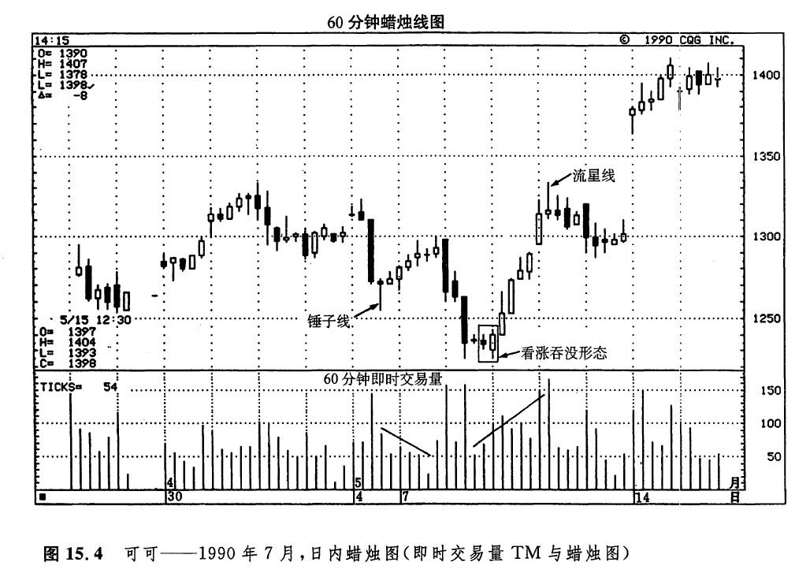
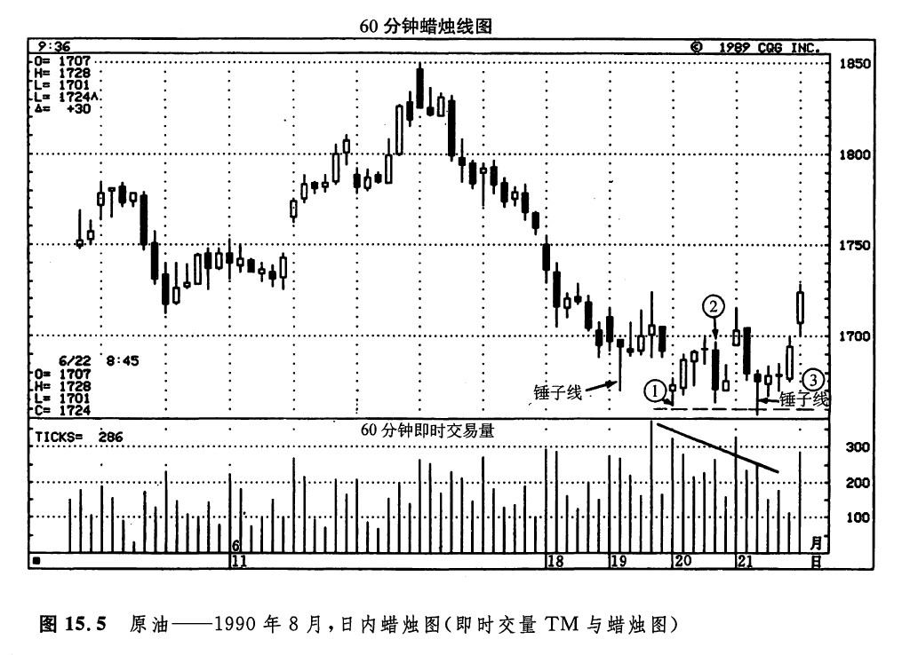

图15.4所示为一张日内的小时蜡烛线图，从中可以体会到即时交易量TM的用处。当5月4日形成了一根看涨的锤子线之后，价格开始上扬。但是，这一轮上涨行情却伴随着下降的即时交易量TM。这是一个迹象，表明牛方的信心不足。还有其他的迹象，那便是这些小小的白色实体。在5月8日的头3个小时里，发生了急剧的价格下滑，为当前的趋势创出了新低。5月8日后来的日内价格变化提供了一些线索，显示早晨的抛售行情可能持续不下去。在第三个小时的长长的黑色蜡烛线之后，出现了一根十字线。这两根蜡烛线组成了一个十字孕线形态。几个小时之后，出现了一根白色实体，它向上覆盖了之前的两根黑色实体。这就形成了一个看涨的吞没形态，并且由于它向上吞没了两个黑色实体，从而具备了额外的分量。另外，这根白色的吞没线的低点与之前的一个低点还构成了一个平头底部形态。
要是您认为上述各方面线索还不足以构成一个底部反转信号的话，那么此处的即时交易量提供了进一步的证据，证实买方已经占据了上风。在上述的看涨吞没形态之后，价格开始上涨。在这一轮上涨行情中，交易量逐步扩张，并且各个蜡烛线实体的高度也呈逐步放大的态势。后来，当市场达到前一周形成的阻挡水平1340美元附近时，形成了一根流星线，这根流星线，加上上述阻挡水平，使当前的价格上涨暂时平息了下来。一旦市场以窗口的形式向上突破了1340美元的阻挡水平，则所有的疑虑一扫而光：牛方牢牢地把握着主动权。

如图15.5所示，6月19日的一个锤子线是一个标志，说明市场可能正在探寻底部。在6月20日的头一个小时，市场达到了16.62美元的新低水平（蜡烛线①）。这一小时的即时交易量TM仅有区区的324笔交易。同一天晚些时候，市场再度向下尝试这一水平，并形成了一根长长的黑色蜡烛线（蜡烛线②）。这一次，即时交易量TM仅有262笔交易。下一天，即6月21日，最有意思。在这个交易日的第三个小时，价格向下开创了当前趋势的新低水平，16.57美元。创造这个新低时的即时交易量TM（249笔交易）比前两次向下试探时（蜡烛线①和蜡烛线②）来得更轻。这就意味着抛售压力正在减弱。于是，价格向上反弹，并形成了一根锤子线。（根据第十一章对破低反涨形态的有关介绍，我们现在预期市场将向上试探前一个高点，即17.24美元附近的水平。）

copyright @ 2018 制作：汉钛电线，Hingtak Wire & Cable LLC